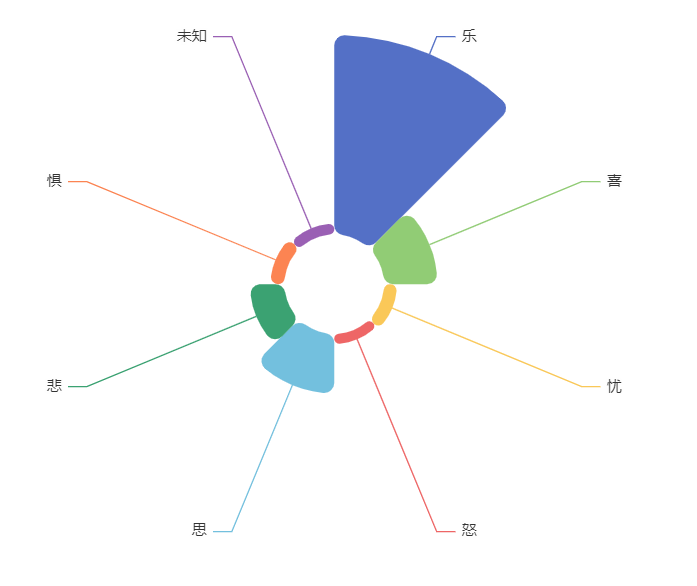
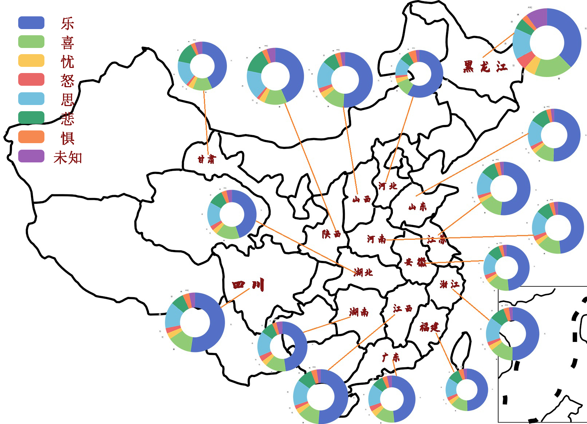

长短词对比分析
诗词的风格指的是诗词的写作方式，它体现了诗人的思想感情，反映了他们的生活和社会文化环境。常见的诗词风格有抒情诗、讽刺诗、哲理诗、悼亡诗、爱情诗、写景诗等。每种风格都有自己的特点，如抒情诗以抒发情感为主，讽刺诗以讽刺社会现实为主，哲理诗以智慧思考为主，悼亡诗以表达悲伤为主，爱情诗以表达爱情为主，写景诗以描写自然风景为主。
长短词中各类风格占比
对于长词，整体来说，呈现线性关系；而对于短词，大部分人选择了七言四句、七言八句、五言八句，通过可视化可以看出非常明显的不同。我们考虑到，这可能是因为短词追求短平快，而长词相对来说，这种需求更低一些。
热力图
词语的长度与句子是否有关系，对于这个问题，我们采用了热力图进行分析，结果非常震惊，单句在五和七有一条非常高的高峰，句子长度为八的数量也是最多的，这与我们中小学学过的诗词的感受也是相符合的。大部分句子还是以五言、七言为主。
地图
我们还统计了地域上的分布，可以明显的看到，黑龙江人与海南人更喜欢写七言四句，但是不爱写七言八句。陕西、山西，浙江人不喜欢写五言八句。在七言八句、五言八句上，并没有明显的区别。
词云
苏轼
苏洵
苏辙
欧阳修
王安石
曾巩

通过各类情感在总诗词中所占比例可以看到，大部分人的情感以乐为主，其次为“喜”和“思”，“怒”、“惧”占的比例最低。可以侧面说明，这些诗人的人生整体还是很不错的。
我们可以看到，对于四言，句子越长，愤怒的占比越多，可能是吵架一方面要简短有力，所以选择四言，另一方面句子要长，因为要说清楚。所以我们也可以看到，对于五言、七言，喜的比例有上升，还有就是思的比例，这些情感不是简短有力的，需要慢慢说。
